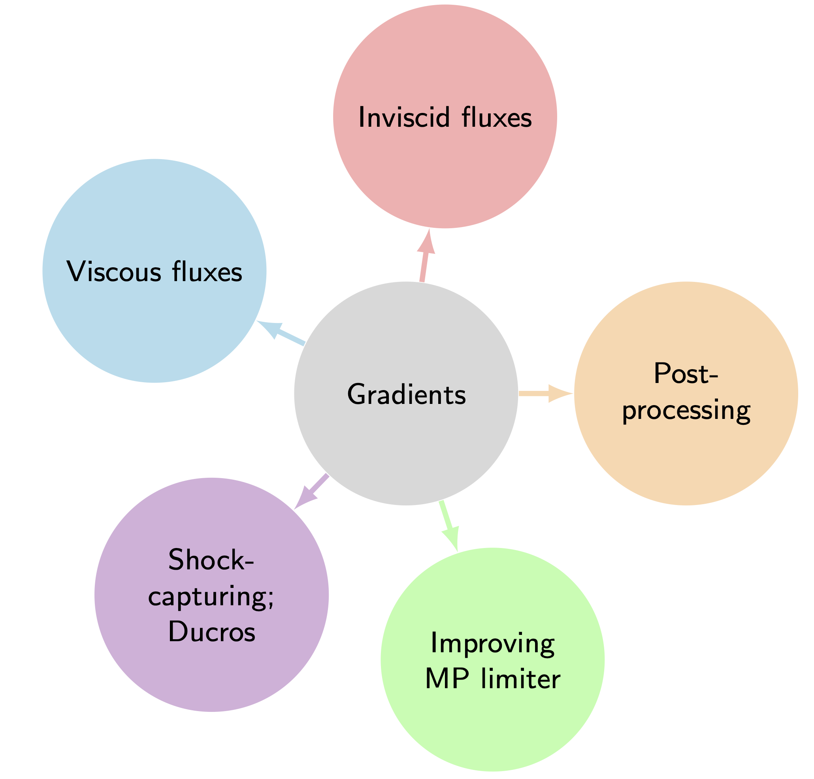

01
A reusable numerical framework
Gradient-Based Reconstruction for Compressible Flow Simulation
The next stage developed Gradient-Based Reconstruction for compressible flow. Derivative information is used to reconstruct flow variables accurately, while the same gradients can be shared between inviscid and viscous flux calculations.
This creates a compact, modular route to high-order Navier–Stokes solvers. The framework was applied to single-component and multicomponent problems containing shocks and turbulent features, and was competitive with established WENO-family approaches while reducing reconstruction cost.
Representative work: Gradient Based Reconstruction (Computers & Fluids, 2023); Efficient High-Order Gradient-Based Reconstruction (JCP, 2023).
